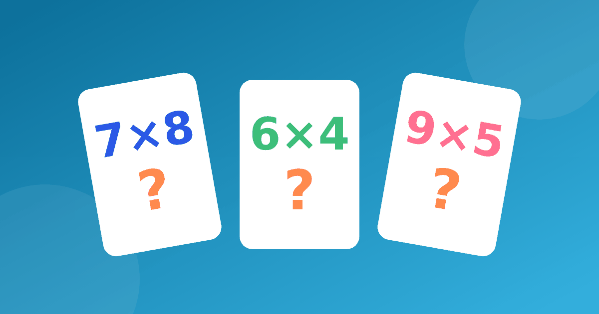

Таблица умножения карточки: колода, три стопки и повторение

Бумажные карточки — один из самых спокойных способов, когда мы учим таблицу умножения дома. Они почти ничего не стоят, делаются за вечер вместе с ребёнком, а заниматься с ними можно по пять минут где угодно: на кухне, в очереди, по дороге в школу. Ниже — как сделать колоду и как с ней работать, чтобы карточки помогали, а не превращались в допрос.
Таблица умножения карточки: как сделать колоду
Возьмите плотную бумагу и нарежьте прямоугольники размером с ладонь ребёнка. На лицевой стороне пишем пример без ответа, например 6 × 4, на обороте — ответ, 24. Лучше, чтобы ребёнок писал карточки сам: пока он выводит цифры, он уже повторяет.
Не делайте сразу сто карточек. Для первой колоды хватит 8–10 штук из одного столбика. Начните с самых лёгких, о них подробно в статье про таблицу на 2 и 3, а новые столбики добавляйте по одному, когда предыдущий уже уверенно ложится в стопку «Знаю».
Система трёх стопок
Разложите перед ребёнком три места на столе. Ребёнок читает пример, отвечает вслух, переворачивает карточку и проверяет себя сам. Дальше карточка идёт в одну из стопок.
- «Не знаю» — ответ неверный или не вспомнился совсем.
- «Думаю» — ответ верный, но пришёл после паузы или через счёт в уме.
- «Знаю сразу» — ответ прозвучал уверенно, без подсказки.
Занятие начинайте со стопки «Не знаю», но берите не больше пяти-шести карточек за раз, иначе ребёнок устанет и запомнит только неудачу. Закончить лучше стопкой «Знаю сразу»: короткий успех в конце — хороший повод вернуться завтра.
Интервальное повторение простыми словами
Идея простая. Только что выученное забывается быстро, поэтому его стоит повторить на следующий день, потом через два-три дня, потом через неделю. Чем увереннее карточка, тем реже она попадается на глаза.
Это легко устроить без всяких программ. Возьмите коробку из-под обуви и поставьте в неё три перегородки: «каждый день», «через день», «раз в неделю». Карточка, на которую ответили верно, переезжает на одно отделение вправо. Ошиблись — возвращается в «каждый день». Точных сроков соблюдать не нужно, это ориентир, а не закон.
Карточки с картинкой и с делением
Если ребёнок не вспоминает ответ, ему нужна опора. На обороте нарисуйте 4 группы по 3 яблока и подпишите 4 × 3 = 12. Забыв ответ, ребёнок сможет посчитать группы и получить число сам. Так карточка учит не угадывать, а восстанавливать, а это надёжнее. Подробнее о том, как работать с непониманием, в статье «Ребёнок не понимает таблицу умножения».
Деление проще всего встроить в ту же колоду. Сделайте «семейные» карточки: на одной стороне 12 ÷ 3, на другой — 4. Или одну большую карточку на четыре равенства: 3 × 4 = 12, 4 × 3 = 12, 12 ÷ 3 = 4, 12 ÷ 4 = 3. Такая таблица умножения и деления карточки в одном наборе показывает, что деление — это умножение наоборот, а значит, учить его с нуля не придётся. Об этой связи рассказывает статья про деление как обратное умножение.
Как проходит одно занятие
Пока мы учим таблицу умножения по карточкам, держим занятие коротким, 5–7 минут. Возьмите пять-шесть карточек из стопки «Не знаю», столько же из «Думаю» и две-три из «Знаю сразу» для хорошего настроения. Если ребёнок устал, остановитесь на верном ответе. Пять минут каждый день работают лучше, чем сорок минут раз в неделю.
Перед контрольной многие ищут именно «таблица умножения и деления карточки». В такую неделю смешайте в одной колоде умножение и деление, но не добавляйте больше одного нового столбика сразу.
Мини-план на неделю
- Понедельник — сделать 8 карточек столбика вместе, разложить по стопкам.
- Вторник и среда — по пять минут, начиная со стопки «Не знаю».
- Четверг — добавить карточки с делением из того же столбика.
- Пятница — перетасовать всё и сыграть без подсказок.
- Выходные — отдых или игра, например «найди пару» из карточек.
Чего лучше избегать
В итоге таблица умножения карточки помогает тогда, когда колода маленькая, правила понятные, а ошибка считается рабочим моментом, а не провалом. Не соревнуйтесь на скорость и не засекайте время: тревога вытесняет из головы даже то, что ребёнок знал вчера. Не отбирайте карточку навсегда после одного верного ответа — пусть она вернётся через пару дней. И не ругайте за стопку «Не знаю»: она нужна, чтобы увидеть, над чем работать.
Когда бумажные карточки надоедят, ту же работу можно продолжить в онлайн-тренажёре. Он объясняет наглядно, с картинками, работает короткими занятиями, без таймера и рейтингов, а регистрироваться для начала не нужно.